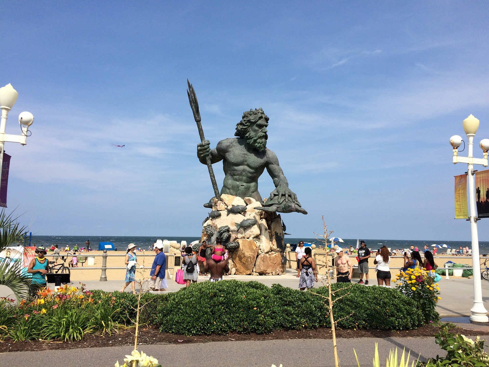

Discover Virginia Beach
Virginia Beach, incorporated in 1906, is the most populous city in Virginia with over 450,000 residents. Known for its sprawling beaches, lively boardwalk, and the iconic Neptune Statue, it’s a coastal paradise that offers fun for all ages.
Highlights
Boardwalk: A vibrant promenade featuring shops, restaurants, and scenic views of the Atlantic Ocean.
Beaches: Home to the longest pleasure beach in the world, perfect for relaxation and water sports.
Neptune Statue: A must-see landmark symbolizing the city’s deep connection to the sea.